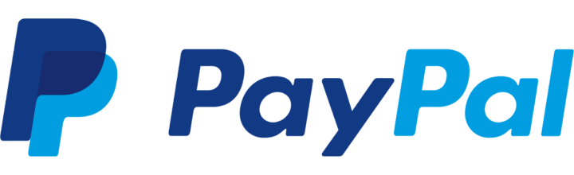

<div id="page" dir="rtl">
    <div class="page-content">
        <div class="progress-bar-container">
            <div class="progress-bar" id="support-bar"></div>
        </div>
        <div class="text-right right-80" style="padding-top: 15px;">
            <h1 class="right-15">حمایت مالی</h1>
            <div class="divider-icon divider-icon-semi divider-margins top-5 bottom-5"></div>
            <span class="right-15 color-white" style="top: 0;">پشتیبانی از ما از طریق PayPal و پی پینگ</span>
        </div>
        <div class="scroll-fixed top-15" style="--scrollHeight: 210px;">
            <div class="content-boxed shadow-large bottom-15">
                <p>
                    خداوند را شاکریم که امسال هم توفیق بودن کنار شما در لحظات ملکوتی افطار و سحر را نصیب ما کرد . از اینکه در سال های گذشته با کمک های مالی و معنوی خود باعث شدید ما مصمم تر در این راه قدم برداریم، سپاسگزاریم. امسال نیز جهت سهیم بودن شما در این راه خیر، ما
                    صمیمانه پذیرای کمک های مالی شما هستیم. کمک های مالی شما، تماما صرف هزینه های جاری مربوط به این رادیو و برگزاری مراسم ویژه شب های قدر خواهد شد. کمک های مالی شما از طریق حساب های ایران و یا حساب های خارج از ایران، قابل جمع آوری می باشد.
                    لطفا جهت کمک های دلاری از طریق لینک PayPal و برای کمک های ریالی از طریق لینک پی پینگ اقدام فرمایید.
                </p>
            </div>
            <div class="one-half">
                <div class="content-boxed bg-gradient-gray2 shadow-large bottom-15" onclick="window.open('https://www.paypal.com/paypalme2/RadioRamezan');">
                    
                </div>
            </div>
            <div class="one-half last-column">
                <div class="content-boxed bg-gradient-teal shadow-large bottom-15" onclick="window.open('https://www.payping.ir/@radioramezan');">
                    
                </div>
            </div>
        </div>
    </div>
</div>
</div>